와인(음료)쇼케이스
와인바 인테리어, 와인쇼케이스 자리부터 잡아야 하는 이유

와인바 인테리어는 와인쇼케이스를 마지막에 들이는 가전이 아니라 벽면 하나를 차지하는 가구로 보고, 설계 첫 단계에서 자리와 크기를 정하시는 것이 좋습니다. 그래야 배선, 열 배출 공간, 조명 톤을 처음부터 맞출 수 있어 공사 후에 어색하게 튀어나오는 일이 없습니다.
안녕하세요. 매장 공간에 맞춰 쇼케이스와 냉장 진열장을 제작하는 한성쇼케이스입니다.
와인바를 준비하시는 사장님들은 조명, 바 테이블, 벽 마감재까지 하나하나 공들여 고르십니다. 그런데 와인쇼케이스는 공사가 거의 끝난 뒤에 "이 자리에 들어갈 만한 걸로" 찾으시는 경우가 적지 않습니다.
그러면 사이즈가 애매하게 남거나, 뒤쪽 열이 빠질 틈이 없어 벽을 다시 손봐야 하는 일이 생깁니다. 와인바에서 병이 진열된 벽은 손님이 가장 오래 바라보는 풍경인데, 그 풍경이 마지막에 끼워 맞춰지는 셈이죠.
오늘은 와인바 인테리어에서 와인쇼케이스를 언제, 어떤 기준으로 정하면 좋은지 정리해 보겠습니다.
1. 와인 벽은 바 좌석에서 보는 풍경입니다
와인바 손님은 대부분 바 좌석이나 테이블에 앉아 오랜 시간 머뭅니다. 앉은 눈높이에서 정면이나 측면으로 보이는 벽에 와인쇼케이스가 있으면 그 자체가 메뉴판 역할을 합니다.
손님이 병을 보고 "저건 어떤 와인이에요?" 하고 묻는 순간 추천과 주문이 자연스럽게 이어집니다.
그래서 와인쇼케이스 위치는 좌석 배치와 함께 정해야 합니다. 앉은 자리에서 라벨이 보이는 높이인지, 직원이 병을 꺼내러 갈 때 손님 동선과 부딪히지 않는지를 같이 보셔야 합니다.
- 바 좌석에 앉았을 때 정면에 오는 벽을 먼저 확인하세요.
- 직원이 병을 꺼내는 동선이 좌석 뒤를 지나지 않게 잡으세요.
2. 설계 단계에서 정해야 할 것들
쇼케이스는 냉각 장치가 돌아가는 장비라 전원 위치와 열이 빠질 공간이 필요합니다. 벽 안에 매립하거나 가구 속에 넣는 빌트인 형태라면 이 공간을 목공 단계에서 미리 비워 둬야 합니다.
공사가 끝난 뒤에는 이 부분을 바꾸기가 어렵습니다.
또 와인은 레드와 화이트, 스파클링처럼 보관하고 내는 방식이 다를 수 있어 한 대로 갈지, 구역을 나눌지도 미리 정해 두시는 편이 좋습니다.
온도는 와인 종류와 운영 방식에 따라 달라지니 취급할 리스트를 기준으로 상담받아 보세요.
- 전원 콘센트 위치
- 뒷면·윗면 열 배출 공간
- 매립형인지 독립형인지
- 보관 구역을 나눌지 여부
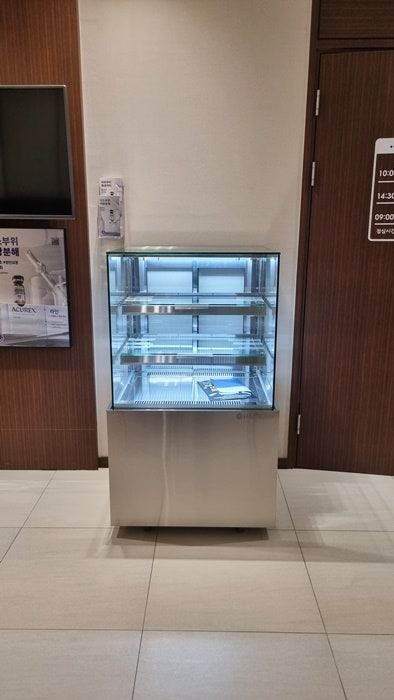
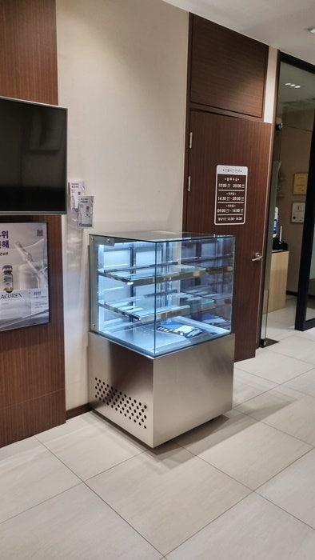
3. 프레임 색과 조명은 벽 마감에 맞춥니다
와인바는 대체로 조도를 낮추고 따뜻한 간접 조명을 쓰는 경우가 많습니다. 이런 공간에서 쇼케이스 안만 하얗게 밝으면 벽 한쪽이 붕 떠 보일 수 있습니다.
내부 조명 색과 밝기를 매장 조명 톤에 맞춰 두면 병만 은은하게 떠오르는 연출이 됩니다.
프레임도 마찬가지입니다. 원목 마감 벽에는 따뜻한 톤이, 콘크리트나 어두운 타일 벽에는 블랙이나 실버 계열이 잘 어울립니다.
기성품은 색과 크기가 정해져 있어 이런 세부 조율이 어렵기 때문에, 맞춤 제작을 선택하시는 와인바가 많습니다.
4. 보이는 진열과 꺼내는 편의 사이
라벨이 보이게 세워 진열할지, 눕혀서 병목이 앞을 향하게 할지에 따라 선반 구조가 달라집니다. 많이 나가는 하우스 와인은 꺼내기 쉬운 높이에, 소장 가치가 있는 병은 눈에 잘 띄는 가운데 칸에 두는 식으로 칸을 나눠 보세요.
문 방식도 운영과 연결됩니다. 직원만 여닫는 뒤쪽 벽면 쇼케이스라면 손님 쪽 디자인에 집중하고, 손님이 직접 고르는 셀프 구역이라면 손잡이와 문 여닫는 방향을 좌석과 부딪히지 않게 정해야 합니다.
체크리스트
- 바 좌석에서 보이는 벽 위치
- 전원과 열 배출 공간 확보
- 매립형·독립형 결정
- 내부 조명 색과 매장 조명 톤
- 프레임 색과 벽 마감재
- 세움 진열·눕힘 진열 선반 구조
현장에서 자주 보는 경우: 가구 설계 단계에서 쇼케이스를 함께 정한 공간
업종은 다르지만, 한 한의원 인테리어 상담에서 같은 고민을 들었습니다. 대리석 데스크와 간접 조명까지 정성껏 꾸몄는데, 정작 공진단과 경옥고 같은 제품을 둘 냉장 공간이 가구와 어울리지 않는다는 것이었습니다.
이런 공간은 데스크 옆 자투리 폭과 층고에 맞춰 가로·세로·높이, 내부 선반 단차, 프레임 색을 처음부터 맞추고, 필요하면 전면에 로고를 각인해 스텐쇼케이스를 하나의 가구처럼 넣습니다.
쇼케이스를 가구 설계 단계부터 함께 고려하면 공간과 일체감이 생긴다는 점은 와인바에도 그대로 적용됩니다.

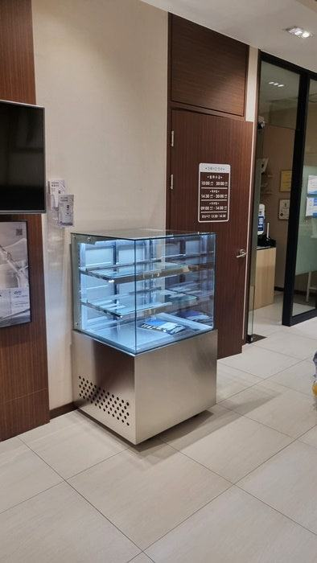
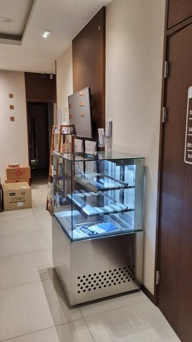
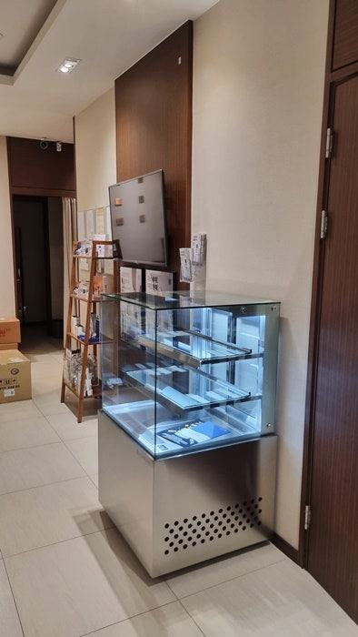
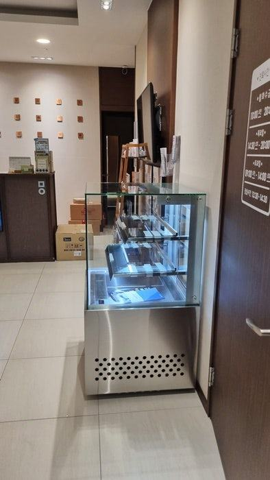
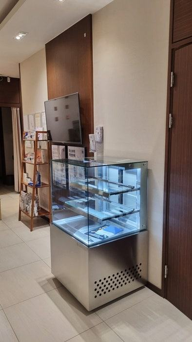
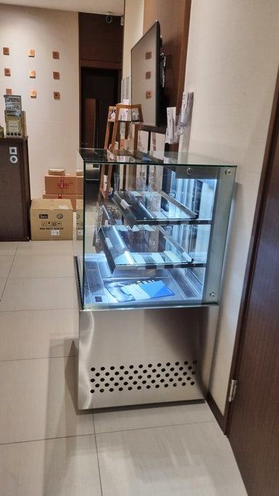
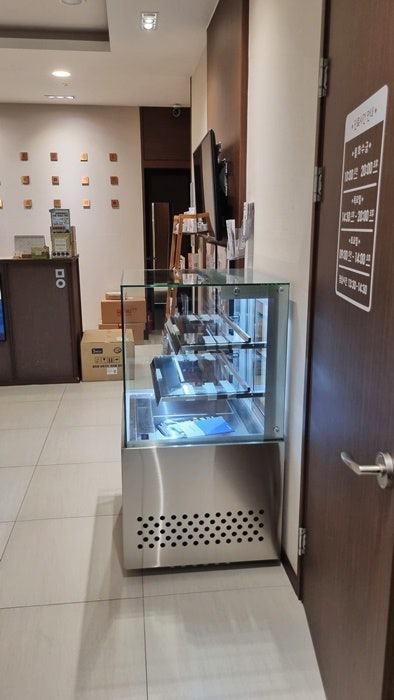
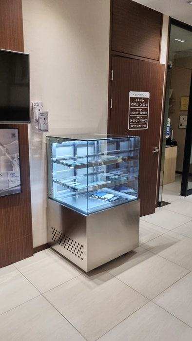
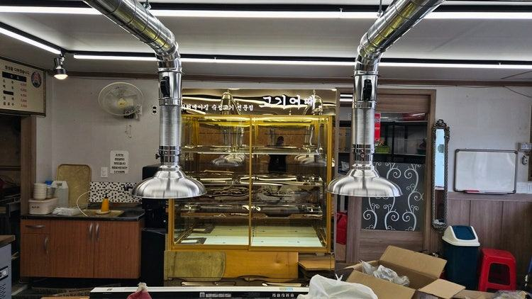
자주 묻는 질문
공사가 이미 끝났는데 와인쇼케이스를 맞춤으로 넣을 수 있나요?
들어갈 자리의 폭, 깊이, 높이와 전원 위치를 알려 주시면 그 공간에 맞춘 크기로 제작할 수 있습니다.
다만 열 배출 공간이 부족하면 주변 마감을 일부 조정해야 할 수 있습니다.
로고를 쇼케이스에 넣을 수 있나요?
전면에 상호나 로고를 각인하는 방식으로 넣을 수 있습니다. 매장 콘셉트에 맞춰 위치와 크기를 함께 정해 드립니다.
슬림한 와인쇼케이스도 제작되나요?
좁은 벽면에 맞춘 슬림형 제작도 가능합니다. 넣을 병 수와 진열 방식을 알려 주시면 깊이와 선반 구성을 그에 맞춰 잡아 드립니다.
매장 조건에 맞춰 만드는 한성쇼케이스
원하시는 제품 사진과 설치할 공간 사진만 보내 주셔도 매장에 맞는 구성을 추천해 드립니다.
- 전국 240여 개 A/S 전담 센터 운영
- 본사 대량 자재 매입으로 품질 대비 합리적인 가격
- 유럽제·삼성 냉각 콤프레셔 적용
- 국내 최초 쇼케이스 전문 디자이너 상주
매장 폭과 원하는 진열 구성을 알려 주세요. 실측과 견적을 안내해 드립니다.
031-986-2458